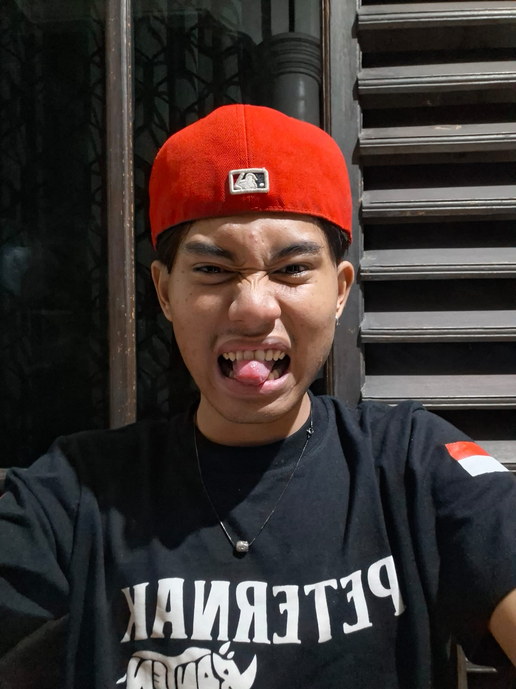

Muhammad Fadhal Masykuri
NIM: 3337250016 / Joker
Tentang Saya
Muhammad Fadhal Masykuri asal Tangerang Lahir 2007 — Informatika Universitas Sultan Ageng Tirtayasa angkatan 25.

NIM: 3337250016 / Joker
Muhammad Fadhal Masykuri asal Tangerang Lahir 2007 — Informatika Universitas Sultan Ageng Tirtayasa angkatan 25.